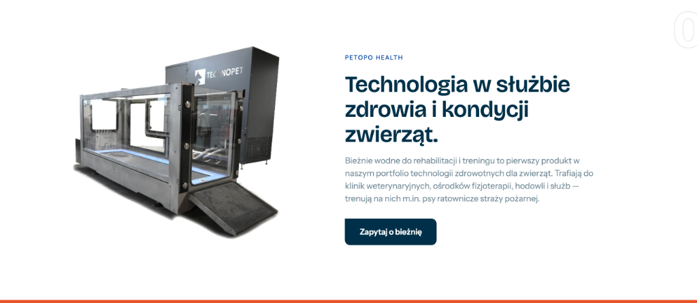

Ceny 60–85 tys. zł w tej analizie są nieaktualne (cennik: 180 000 zł netto), więc liczone od nich raty i zwrot też.
Raport Strategiczny: Rynek Bieżni Wodnych dla Psów i Koni (3 Kierunki)
Raport realizuje analizę w trzech obszarach:
- Kierunek 1: Audyt CRO / UX i Strategia Lead Generation B2B (dla Petopo Health / Technopet na tle liderów europejskich).
- Kierunek 2: Kalkulacja Biznesowa i Unit Economics (opłacalność dla gabinetu/stajni oraz model producenta/dystrybutora).
- Kierunek 3: Katalog Modeli, Specyfikacji Technicznych i Cenników (Psy vs Konie).
Kierunek 1: Audyt Wizualny (Visual First) & Lejek B2B dla Petopo Health / Technopet
Analiza oparta na przesłanym widoku sekcji produktowej Petopo Health / Technopet oraz wzorcach z bazy wiedzy (B2B Information Density – wzorzec McMaster-Carr oraz PDP Clarity / DRIP Taxonomy: „De-escalate first, persuade second”).

1.1. Diagnoza obecnego ekranu (STRONA → SHOPPER → AKCJE → DANE)
Główna diagnoza (B2B Spec Density vs Lifestyle): Kupujący sprzęt za 60 000 – 90 000 PLN netto (weterynarz, zoofizjoterapeuta) nie kupuje „aspiracji”, lecz pewność techniczną i zwrot z inwestycji (ROI). Obecna sekcja ma czysty, nowoczesny UI, ale cierpi na niską gęstość informacyjną (Low Spec Density) przed wezwaniem do akcji.
- Co działa dobrze (Mocne strony):
- Render/Zdjęcie produktu: Pokazuje otwartą rampę, przeszkloną komorę i zintegrowaną szafę technologiczną w jednym ujęciu.
- Kotwica autorytetu (Social Proof w copy): Wzmianka „trenują na nich m.in. psy ratownicze straży pożarnej” buduje zaufanie do wytrzymałości konstrukcji.
- 5 Luk Konwersji (wg taksonomii PDP Clarity & B2B UX):
- Brak redukcji lęku cenowego przed CTA (De-escalate first): Przycisk
Zapytaj o bieżnięoznacza dla klienta: „Zostawię numer, zadzwoni handlowiec i rzuci kwotę 80 tys. zł”. Brak informacji typu: „Leasing od 1 150 zł netto / mies. (spłaca się przy 9 zabiegach miesięcznie)”. - Brak kluczowych wymiarów i wymagań lokalowych (Primary Purchase Concern): Pierwsze pytanie każdego właściciela gabinetu brzmi: „Czy wniesiemy to przez drzwi 80/90 cm i ile m² zajmie?”. Brak chociażby 3 parametrów pod tekstem.
- Zrzut ogólny zamiast wyniku klinicznego/operacyjnego: Nagłówek „Technologia w służbie zdrowia i kondycji zwierząt” jest wizerunkowy. Nie komunikuje głównej przewagi operacyjnej (np. „Napełnianie w 120 sekund, łatwe czyszczenie z sierści i polski serwis w 24h”).
- Brak Micro-Conversion (Pośredniego kroku dla niezdecydowanych): 90% ruchu B2B na etapie researchu nie kliknie
Zapytaj o bieżnię, ale chętnie pobierze Katalog z cennikiem i schematem przyłączy (PDF). - Brak ekspozycji panelu sterowania i procesu czyszczenia: Na zdjęciu nie widać ekranu dotykowego fizjoterapeuty ani sposobu podnoszenia pasa bieżni (co na stronie czeskiego Vettronic jest głównym elementem sprzedającym).
1.2. Rekomendowana Architektura Landing Page'a B2B (Wireframe & Taktyki)
- HERO: Konkretny Wynik + Raty Leasingu + 2 CTA (Wycena / Pobierz PDF)
- PASEK ZAUFANIA: Straż Pożarna + Kliniki + Gwarancja Serwisu 24h w PL
- SEKJA 1 (Gęstość B2B): Tabela Specyfikacji i Wymiary (Czy zmieści się w gabinecie?)
- SEKCJA 2 (Operacje): Wideo 30s - Wprowadzenie psa, Napełnianie wody, Czyszczenie z sierści
- SEKCJA 3 (Kalkulator ROI): Suwak: Liczba psów dziennie x Cena zabiegu = Twój Zysk Netto
- FORMULARZ LEAD GEN: Konfigurator wersji + Pobranie Karty Przygotowania Lokalu
Mapowanie Eventów GA4 (Standard EEL: Element → Akcja → Event w GA4)
Przycisk Primary "Zapytaj o wycenę i leasing" → Kliknięcie → click_lead_cta_primaryPrzycisk Secondary "Pobierz Kartę Lokalu i Katalog (PDF)" → Pobranie po podaniu e-maila → generate_lead_catalog_pdfKalkulator ROI (Suwak liczby zabiegów) → Interakcja z suwakiem → interact_roi_calculatorWideo pokazowe (Czyszczenie i praca bieżni) → Odtworzenie >50% → video_progress_50_demoTabela specyfikacji technicznej → Rozwinięcie pełnych parametrów → view_tech_specs_table
Kierunek 2: Kalkulacja Biznesowa i Unit Economics (ROI)
2.1. Ekonomika dla Klienta (Gabinet Zoofizjoterapii / Klinika Weterynaryjna – PSY)
Dlaczego gabinety tak chętnie biorą bieżnie w leasing? Ponieważ jest to tzw. Cash Cow (wysokomarżowa usługa powtarzalna – psy po operacji TPLO lub z dysplazją przychodzą w pakietach po 10–20 zabiegów).
| Parametr | Wariant Konserwatywny (Mały gabinet) | Wariant Standardowy (Średnia klinika) | Wariant Intensywny (Centrum Rehab) |
|---|---|---|---|
| Cena zakupu bieżni (netto) | 65 000 PLN | 75 000 PLN | 85 000 PLN |
| Rata leasingowa (5 lat, 10% wpłaty) | ~1 250 PLN netto / mies. | ~1 450 PLN netto / mies. | ~1 650 PLN netto / mies. |
| Koszt prądu, wody i chemii / mies. | ~350 PLN | ~550 PLN | ~850 PLN |
| Średnia cena 1 zabiegu (30-45 min) | 120 PLN | 140 PLN | 160 PLN |
| Liczba zabiegów dziennie (22 dni rob.) | 2 psy dziennie (44/mies.) | 4 psy dziennie (88/mies.) | 7 psów dziennie (154/mies.) |
| Przychód miesięczny z samej bieżni | 5 280 PLN | 12 320 PLN | 24 640 PLN |
| Zysk operacyjny (po racie i mediach) | +3 680 PLN / mies. | +10 320 PLN / mies. | +22 140 PLN / mies. |
| Próg rentowności (Break-Even Point) | 14 zabiegów miesięcznie (<4 psy tygodniowo!) | 15 zabiegów miesięcznie | 16 zabiegów miesięcznie |
| Pełny zwrot z zakupu (Payback) | ~14 miesięcy | ~6-7 miesięcy | ~3,5 miesiąca |
Wniosek sprzedażowy dla producenta/dystrybutora: Sprzedawanie bieżni za „75 000 zł” brzmi dla młodego zoofizjoterapeuty jak bariera nie do przeskoczenia. Sprzedawanie jej jako „Urządzenie, które spłaca swoją ratę przy 1 psie co drugi dzień, a przy 4 psach dziennie zostawia 10 000 zł czystego zysku” zamienia wydatek w oczywistą decyzję inwestycyjną.
2.2. Ekonomika dla Ośrodka Jeździeckiego (KONIE)
- Inwestycja (CAPEX): 350 000 PLN (bieżnia) + 50 000 PLN (adaptacja budowlana/przyłącza) = 400 000 PLN netto.
- Rata leasingu (5 lat): ~7 500 PLN netto / mies. + media/serwis (~1 500 PLN) = 9 000 PLN kosztów stałych.
- Model monetyzacji w stajni:
- Pojedynczy trening konia z zewnątrz: 150 – 250 PLN.
- Miesięczny pensjonat rehabilitacyjny z pakietem bieżni wodnej: 3 500 – 6 000 PLN / mies. za konia.
- Wystarczy 4–5 koni w stałej rehabilitacji stacjonarnej, aby całkowicie pokryć leasing i generować wysoką marżę na pensjonacie i zabiegach towarzyszących (laser, magnetoterapia).
2.3. Ekonomika Producenta / Dystrybutora (B2B Hardware)
- Koszt wytworzenia (COGS – Bom materiałowy + robocizna w PL dla bieżni psiej):
- Stal kwasoodporna AISI 316L (odporna na chemię basenową) + cięcie laserowe i spawanie TIG: ~12 000 – 16 000 PLN.
- Szkło hartowane / laminowane + uszczelnienia: ~4 000 – 6 000 PLN.
- Napęd (silnik + falownik / hydraulika), pompy obiegowe, grzałki przepływowe, lampy UV, zbiornik PP/stalowy: ~8 000 – 12 000 PLN.
- Automatyka PLC + panel dotykowy HMI + robocizna montażowa: ~6 000 – 10 000 PLN.
- Łączny koszt produkcji (COGS): ok. 30 000 – 44 000 PLN netto przy produkcji małoseryjnej.
- Cena sprzedaży: 65 000 – 90 000 PLN netto (Marża brutto: 45% – 55%).
- Ukryte źródło stałego przychodu (Recurring Revenue): Obowiązkowe płatne przeglądy gwarancyjne/pogwarancyjne (2500–4000 PLN/rok), wymiana taśm bieżnych, filtrów wkładkowych i chemii basenowej.
Kierunek 3: Porównanie Konkretnych Modeli, Parametrów i Cenników
3.1. Matryca Porównawcza: Bieżnie Wodne dla PSÓW
| Marka i Model | Segment | Kluczowe Parametry Techniczne | Wyróżnik (USP) | Orientacyjna Cena (Netto) |
|---|---|---|---|---|
| Chiński Import (np. MC-Basic / MC-C480) (VetVerta / Veted) | Economy | • Prędkość: 0.8 – 12 km/h • Wymiary komory: ~140 x 60 cm • Udźwig: do 70-80 kg | Najniższa cena wejścia na rynek; podstawowa filtracja i podgrzewanie. | 36 000 – 46 000 PLN |
| Technopet (Petopo Health) (Polska) | Mid-High | • Konstrukcja zintegrowana (komora + szafa) • Obustronne najazdy / drzwi • Przeciwprąd + hydromasaż + regulacja wody | Zwarta bryła All-in-One, nowoczesny panel sterowania pod ręką terapeuty, polska produkcja. | Wycena indyw. (~60 000 – 85 000 PLN) |
| FizjoPet (Standard / Comfort / Large) (Polska – Hycon) | Mid-High | • Prędkość: 0.3 – 9.0 km/h (skok co 0.1) • Wymiary (Comfort): ~195 x 76 cm • Udźwig: do 100 kg • Zbiornik: 1000 – 1300 L | Napęd hydrauliczny (brak prądu w komorze wodnej), certyfikacja medyczna TÜV NORD, opcja wzniosu taśmy. | 55 000 – 95 000 PLN |
| Vettronic (Basic / Classic / UP / Deluxe) (Czechy) | Mid-Premium | • Prędkość: 0.2 – 11 km/h (przód + wstecz) • Pionowo podnoszony pas do mycia • Lampa UV + fotokataliza + tryb nocny grzania | Bardzo dopracowany czeski inżyniering, automatyczne dozowanie, opcja wynajmu długoterminowego. | 14 000 – 24 000 EUR (~60 000 – 105 000 PLN) |
| Hydro Physio (FOCUS / Pacer) (Wielka Brytania) | Premium Clinical | • Prędkość: 0.1 – 9.5 km/h • Podłoga podnoszona hydraulicznie (w wybranych modelach) • Kliniczny system uzdatniania wody | Złoty standard światowych klinik uniwersyteckich; najwyższa trwałość wieloletnia. | 25 000 – 40 000+ EUR (~110 000 – 175 000 PLN) |
3.2. Matryca Porównawcza: Bieżnie Wodne dla KONI (Aquatrainers)
| Marka i Model | Kraj | Kluczowe Parametry Techniczne | Wyróżnik (USP) | Orientacyjna Cena (Netto) |
|---|---|---|---|---|
| FizjoPet Equimotion Aqua (Basic / Premium) | 🇵🇱 Polska | • Napełnianie / opróżnianie: < 3 minuty • Prędkość pasa: płynna regulacja z falownikiem • Opcja monitoringu tętna i termografii | Najlepszy stosunek ceny do jakości w Polsce; szybki lokalny serwis i wsparcie przy projekcie kanału. | 250 000 – 380 000 PLN |
| Horse Gym 2000 (Aqua Basic / Aqua Premium) | 🇩🇪 Niemcy | • Wysokość wody: do 1,0 m (Basic) lub do 1,2 m (Premium) • Stal nierdzewna malowana proszkowo (wyciszenie) • Czujniki laserowe / fotokomórki bezpieczeństwa | Najpopularniejsza bieżnia w europejskich stajniach skokowych; bardzo wysoka wartość odsprzedaży na rynku wtórnym. | 85 000 – 145 000 EUR (~370 000 – 630 000 PLN) |
| Activo-Med AquaLine | 🇩🇪 Niemcy | • Połączenie bieżni wodnej i zimnego SPA (opcjonalny agregat chłodniczy do 4°C) • Wielostopniowa filtracja bębnowa (oddzielanie odchodów) | Kompleksowe wdrożenie z protokołami treningowymi lekarzy weterynarii; funkcja 2w1 (Trening + Cold Spa). | 100 000 – 180 000+ EUR (~430 000 – 780 000 PLN) |
| CET Equine Spa / Aquatrainer | 🇬🇧 UK | • Temperatura solanki: 2°C – 4°C (w wersji SPA) • Wysokie stężenie soli + aeracja (bąbelki masujące ścięgna) | Światowy lider krioterapii wodnej koni wyścigowych (leczenie stanów zapalnych ścięgien i więzadeł). | 70 000 – 150 000 EUR (~300 000 – 650 000 PLN) |
Podsumowanie: Co wdrożyć w pierwszej kolejności (Quick Wins dla Petopo / Technopet)?
- Dodanie „Karty Wymagań Lokalowych i Przyłączy (PDF)” na stronie – jako darmowego materiału do pobrania obok przycisku
Zapytaj o bieżnię. Zbierze to kontakty do osób, które dopiero szukają lokalu pod gabinet zoofizjoterapii (wchodzisz w proces zakupowy 3 miesiące przed konkurencją). - Komunikacja ceny przez pryzmat raty i liczby zabiegów – dodanie pod opisem jednego zdania: „Finansowanie leasingowe dla gabinetów i klinik – inwestycja zwraca się już przy 2 pacjentach dziennie”.
- Sekcja „Gęstość Techniczna (Specyfikacja)” bezpośrednio pod Hero – tabela z wymiarami komory, wymiarami całkowitymi z szafą, szerokością minimalną drzwi montażowych, pojemnością zbiornika, mocą grzałek i czasem napełniania.
- Wideo operacyjne (60 sekund) – pokazujące realną pracę fizjoterapeuty: łatwe otwarcie drzwi, wejście psa po rampie bez poślizgu, start taśmy od 0,1/0,2 km/h i spust wody z płukaniem filtra z sierści.